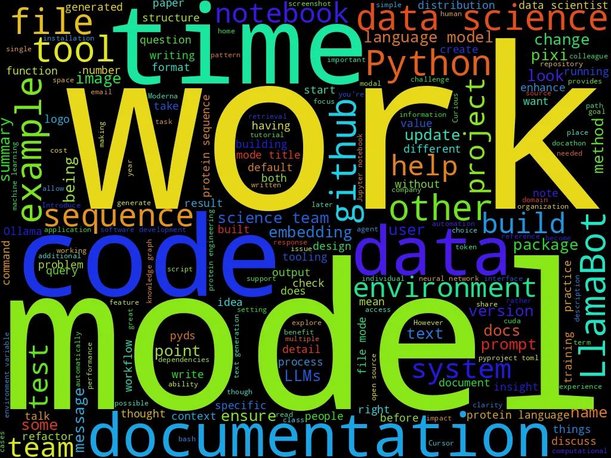

Eric J Ma's Website
written by Eric J. Ma on 2024-12-31 | tags: blogging consistency ai content llms data biotech career writing discovery
In this blog post, I reflect on my year-long challenge of writing a blog post every week, surpassing my goal with 53 posts. This journey taught me the power of consistency, improved my ability to communicate complex ideas, and helped me develop AI-assisted tools to streamline my workflow. I also explored the intersection of life sciences and computation, aiming to accelerate scientific discovery. How did these experiences shape my approach to integrating AI into creative processes and what insights can you gain from my journey?
A challenge I set for myself this year was to write a blog post on average once every week for the year, regardless of what's going on. This meant writing 52 blog posts in total. As of December 19, I've hit 53, meaning that I've accomplished my goals!
What I learned
Here's what I've learned so far.
Consistency is king!
One of the biggest lessons I learned from this year-long blogging journey is that consistency truly is king. By committing to writing weekly, I noticed my sense of what to write about became increasingly refined and sharpened over time. The regular practice helped me:
- Develop a better radar for interesting technical topics worth sharing
- Improve my ability to explain complex concepts clearly
- Build a more systematic approach to documenting my learning journey
- Create a sustainable writing habit that feels natural rather than forced
Build AI-assistance tools and use them
Throughout this journey, I found myself building quite a bit of tooling to support my blogging workflow, most of it done with AI assistance. Some notable examples include:
Blog Banner Generation: I developed a system that uses DALL-E to automatically generate watercolor-style banner images for each post, maintaining a consistent visual identity while saving time on design.
Social Media Integration: I built tools that use LLMs to help craft:
- Twitter posts that effectively summarize and promote new blog entries
- Substack newsletters that engage my subscriber base
- LinkedIn updates that resonate with my professional network
Content Enhancement: I created automated systems for:
- Generating relevant tags for better post categorization
- Creating compelling summaries that capture the essence of each post
- Suggesting related content links to improve site navigation
This tooling journey has been particularly valuable as it helped me:
- Further hone my prompting practices with LLMs
- Develop better intuition for designing programs that incorporate LLMs as integral components
- Create a more efficient and consistent blogging workflow
- Experiment with different approaches to human-AI collaboration
The experience of building these tools has not only made my blogging more efficient but has also sharpened my intuition for how to effectively integrate AI into creative workflows while maintaining human oversight and editorial control.
Wordcloud
And here is the obligatory wordcloud of the blog posts:

Reflections
One year of blogging once a week, with regular posts on LinkedIn, Twitter, Substack, and Bluesky, have left my colleagues jokingly calling me a content creator. Jokes aside, this year has seen a significant focus on LLMs in my writing, as evidenced by the numerous posts in the LLMs & Data Science Tooling section. This reflects the broader excitement and rapid developments in the LLM space. At the same time, my core interests continue to lie at the intersection of life sciences and computation - you can see this in the many posts about protein language models, biological applications of deep learning, and data science in biotech organizations. My professional goal is to make discovery science run at the speed of thought and quantify the unquantified. This means leveraging advances in AI and computation to accelerate scientific discovery, while developing tools that help scientists measure and understand previously intangible aspects of biology. After all, the most transformative breakthroughs happen when we remove the friction from scientific exploration and shine light on unexplored territory.
Blog Posts by Theme
To help you navigate through these posts more easily, I've organized them by major themes below. You'll notice some posts appear under multiple themes - that's because many topics naturally overlap, reflecting the interconnected nature of modern data science work. Whether you're interested in LLMs, leadership, tooling, or biology, you'll find relevant content in these curated lists.
Biology & Chemistry
- Success Factors for Data Science Teams in Biotech (2024-02-07)
- Dashboard-ready data is often machine learning-ready data (2024-02-18)
- Mixtral-8x7b-Instruct works on an old GTX1080! (2024-03-10)
- Data Science in the Biotech Research Organization (2024-05-05)
- Paper Review: Design of highly functional genome editors by modeling the universe of CRISPR-Cas sequences (2024-05-12)
- How to control PyMOL from Jupyter notebooks (2024-05-16)
- Multi-modality Deep Learning (2024-05-27)
- The Neural Von Mises Mixture Model (2024-06-08)
- A survey of how to use protein language models for protein design: Part 1 (2024-07-26)
- A survey of how to use protein language models for protein design: Part 2 (2024-08-02)
- A survey of how to use protein language models for protein design: Part 3 (2024-08-09)
- A modest proposal for data catalogues at biotechs (2024-11-22)
Career Advice
- GitHub Actions secrets need to be explicitly declared (2024-01-11)
- How to keep sharp with technical skills as a data science team lead (2024-02-25)
- Your first 90 days at work - what should you do? (2024-02-29)
- From Academia to Industry: Career Advice from MIT Industry Careers Panel (2024-03-09)
- How to organize and motivate a biotech data science team (2024-03-23)
- Hire for communication skills, not conversational skills (2024-06-26)
- Conference report: SciPy 2024 (2024-07-14)
- What brings you joy at work? (2024-10-09)
- How to thrive, and not just survive, during organizational change (2024-12-17)
Data Science Practice & Leadership
- Exploratory data analysis isn’t open-ended (2024-01-28)
- Success Factors for Data Science Teams in Biotech (2024-02-07)
- Dashboard-ready data is often machine learning-ready data (2024-02-18)
- How to keep sharp with technical skills as a data science team lead (2024-02-25)
- How to organize and motivate a biotech data science team (2024-03-23)
- How to grow software development skills in a data science team (2024-04-05)
- pyds-cli version 0.4.0 released! (2024-04-07)
- How LLMs can accelerate data science (2024-04-17)
- Data Science in the Biotech Research Organization (2024-05-05)
- Headache-free, portable, and reproducible handling of data access and versioning (2024-06-18)
- Hire for communication skills, not conversational skills (2024-06-26)
- Two years of docathons: Insights and lessons learned (2024-06-30)
- Use native formats when storing data (2024-07-02)
- Conference report: SciPy 2024 (2024-07-14)
- Building Pigeon Secure Notes in under 15 minutes of coding (2024-10-06)
- What brings you joy at work? (2024-10-09)
- Keys to effective collaborative data science (2024-10-18)
- The Human Dimension to Clean, Distributable, and Documented Data Science Code (2024-10-25)
- A modest proposal for data catalogues at biotechs (2024-11-22)
Data Science Tooling
- Evolving LlamaBot (2024-01-10)
- GitHub Actions secrets need to be explicitly declared (2024-01-11)
- Your embedding model can be different from your text generation model (2024-01-15)
- Exploratory data analysis isn’t open-ended (2024-01-28)
- An (incomplete and opinionated) survey of LLM tooling (2024-02-01)
- Success Factors for Data Science Teams in Biotech (2024-02-07)
- Dashboard-ready data is often machine learning-ready data (2024-02-18)
- LlamaBot with Ollama on my home virtual private network (2024-02-21)
- Mixtral-8x7b-Instruct works on an old GTX1080! (2024-03-10)
- Llamabot 0.4.0 Released! (2024-03-24)
- How to grow software development skills in a data science team (2024-04-05)
- pyds-cli version 0.4.0 released! (2024-04-07)
- How to make distributable pre-commit hooks (2024-04-09)
- How LLMs can accelerate data science (2024-04-17)
- How to control PyMOL from Jupyter notebooks (2024-05-16)
- Multi-modality Deep Learning (2024-05-27)
- How to manage CUDA libraries within Conda environments (2024-06-01)
- The Neural Von Mises Mixture Model (2024-06-08)
- Headache-free, portable, and reproducible handling of data access and versioning (2024-06-18)
- Two years of docathons: Insights and lessons learned (2024-06-30)
- Use native formats when storing data (2024-07-02)
- Conference report: SciPy 2024 (2024-07-14)
- It's time to try out pixi! (2024-08-16)
- Dissecting the ESM3 Model Architecture (2024-08-25)
- LlamaBot now has StructuredBot! (2024-08-31)
- On writing LLM evals in pytest (2024-09-06)
- Cursor is a jetpack for coders (2024-09-14)
- Sync GitHub secrets with your .env and gh CLI (2024-09-15)
- How to set up Pixi with CodeArtifacts (2024-09-19)
- Recreating Shortwhale with AI-Assisted Coding (2024-09-23)
- Explain your Jupyter notebooks using LlamaBot (2024-09-27)
- Building Pigeon Secure Notes in under 15 minutes of coding (2024-10-06)
- What brings you joy at work? (2024-10-09)
- Keys to effective collaborative data science (2024-10-18)
- Cursor did a one-shot rewrite of a Panel app I built (2024-10-20)
- The Human Dimension to Clean, Distributable, and Documented Data Science Code (2024-10-25)
- Introducing new (local) LlamaBot logging features (2024-11-02)
- Disposable environments for ad-hoc analyses (2024-11-08)
- Deploying Ollama on Modal (2024-11-14)
- A modest proposal for data catalogues at biotechs (2024-11-22)
- How LlamaBot's new agent features simplify complex task automation (2024-12-15)
- 5 retrieval strategies to boost your RAG system's performance (2024-12-16)
- Accurately extract text from research literature PDFs with Nougat-OCR and Docling (2024-12-20)
LLMs
- Evolving LlamaBot (2024-01-10)
- Your embedding model can be different from your text generation model (2024-01-15)
- An (incomplete and opinionated) survey of LLM tooling (2024-02-01)
- LlamaBot with Ollama on my home virtual private network (2024-02-21)
- Mixtral-8x7b-Instruct works on an old GTX1080! (2024-03-10)
- Llamabot 0.4.0 Released! (2024-03-24)
- How LLMs can accelerate data science (2024-04-17)
- Paper Review: Design of highly functional genome editors by modeling the universe of CRISPR-Cas sequences (2024-05-12)
- How to control PyMOL from Jupyter notebooks (2024-05-16)
- Multi-modality Deep Learning (2024-05-27)
- The Neural Von Mises Mixture Model (2024-06-08)
- A survey of how to use protein language models for protein design: Part 1 (2024-07-26)
- A survey of how to use protein language models for protein design: Part 2 (2024-08-02)
- A survey of how to use protein language models for protein design: Part 3 (2024-08-09)
- Dissecting the ESM3 Model Architecture (2024-08-25)
- LlamaBot now has StructuredBot! (2024-08-31)
- On writing LLM evals in pytest (2024-09-06)
- Cursor is a jetpack for coders (2024-09-14)
- Recreating Shortwhale with AI-Assisted Coding (2024-09-23)
- Explain your Jupyter notebooks using LlamaBot (2024-09-27)
- Cursor did a one-shot rewrite of a Panel app I built (2024-10-20)
- Introducing new (local) LlamaBot logging features (2024-11-02)
- Deploying Ollama on Modal (2024-11-14)
- How LlamaBot's new agent features simplify complex task automation (2024-12-15)
- 5 retrieval strategies to boost your RAG system's performance (2024-12-16)
- Accurately extract text from research literature PDFs with Nougat-OCR and Docling (2024-12-20)
Blog Posts
And for completeness, here's a list of all the blog posts I've written up till 29 December 2024.
| Date | Title | Categories |
|---|---|---|
| 2024-01-10 | Evolving LlamaBot | LLMs, Data Science Tooling |
| 2024-01-11 | GitHub Actions secrets need to be explicitly declared | Data Science Tooling, Career Advice |
| 2024-01-15 | Your embedding model can be different from your text generation model | LLMs, Data Science Tooling |
| 2024-01-28 | Exploratory data analysis isn’t open-ended | Data Science Practice & Leadership, Data Science Tooling |
| 2024-02-01 | An (incomplete and opinionated) survey of LLM tooling | LLMs, Data Science Tooling |
| 2024-02-07 | Success Factors for Data Science Teams in Biotech | Data Science Practice & Leadership, Data Science Tooling, Biology & Chemistry |
| 2024-02-18 | Dashboard-ready data is often machine learning-ready data | Data Science Practice & Leadership, Data Science Tooling, Biology & Chemistry |
| 2024-02-21 | LlamaBot with Ollama on my home virtual private network | LLMs, Data Science Tooling |
| 2024-02-25 | How to keep sharp with technical skills as a data science team lead | Data Science Practice & Leadership, Career Advice |
| 2024-02-29 | Your first 90 days at work - what should you do? | Career Advice |
| 2024-03-09 | From Academia to Industry: Career Advice from MIT Industry Careers Panel | Career Advice |
| 2024-03-10 | Mixtral-8x7b-Instruct works on an old GTX1080! | LLMs, Data Science Tooling, Biology & Chemistry |
| 2024-03-23 | How to organize and motivate a biotech data science team | Data Science Practice & Leadership, Career Advice |
| 2024-03-24 | Llamabot 0.4.0 Released! | LLMs, Data Science Tooling |
| 2024-04-05 | How to grow software development skills in a data science team | Data Science Practice & Leadership, Data Science Tooling |
| 2024-04-07 | pyds-cli version 0.4.0 released! | Data Science Practice & Leadership, Data Science Tooling |
| 2024-04-09 | How to make distributable pre-commit hooks | Data Science Tooling |
| 2024-04-17 | How LLMs can accelerate data science | LLMs, Data Science Practice & Leadership, Data Science Tooling |
| 2024-05-05 | Data Science in the Biotech Research Organization | Data Science Practice & Leadership, Biology & Chemistry |
| 2024-05-12 | Paper Review: Design of highly functional genome editors by modeling the universe of CRISPR-Cas sequences | LLMs, Biology & Chemistry |
| 2024-05-16 | How to control PyMOL from Jupyter notebooks | LLMs, Data Science Tooling, Biology & Chemistry |
| 2024-05-27 | Multi-modality Deep Learning | LLMs, Data Science Tooling, Biology & Chemistry |
| 2024-06-01 | How to manage CUDA libraries within Conda environments | Data Science Tooling |
| 2024-06-08 | The Neural Von Mises Mixture Model | LLMs, Data Science Tooling, Biology & Chemistry |
| 2024-06-18 | Headache-free, portable, and reproducible handling of data access and versioning | Data Science Practice & Leadership, Data Science Tooling |
| 2024-06-26 | Hire for communication skills, not conversational skills | Data Science Practice & Leadership, Career Advice |
| 2024-06-30 | Two years of docathons: Insights and lessons learned | Data Science Practice & Leadership, Data Science Tooling |
| 2024-07-02 | Use native formats when storing data | Data Science Practice & Leadership, Data Science Tooling |
| 2024-07-14 | Conference report: SciPy 2024 | Data Science Practice & Leadership, Data Science Tooling, Career Advice |
| 2024-07-26 | A survey of how to use protein language models for protein design: Part 1 | LLMs, Biology & Chemistry |
| 2024-08-02 | A survey of how to use protein language models for protein design: Part 2 | LLMs, Biology & Chemistry |
| 2024-08-09 | A survey of how to use protein language models for protein design: Part 3 | LLMs, Biology & Chemistry |
| 2024-08-16 | It's time to try out pixi! | Data Science Tooling |
| 2024-08-25 | Dissecting the ESM3 Model Architecture | LLMs, Data Science Tooling |
| 2024-08-31 | LlamaBot now has StructuredBot! | LLMs, Data Science Tooling |
| 2024-09-06 | On writing LLM evals in pytest | LLMs, Data Science Tooling |
| 2024-09-14 | Cursor is a jetpack for coders | LLMs, Data Science Tooling |
| 2024-09-15 | Sync GitHub secrets with your .env and gh CLI | Data Science Tooling |
| 2024-09-19 | How to set up Pixi with CodeArtifacts | Data Science Tooling |
| 2024-09-23 | Recreating Shortwhale with AI-Assisted Coding | LLMs, Data Science Tooling |
| 2024-09-27 | Explain your Jupyter notebooks using LlamaBot | LLMs, Data Science Tooling |
| 2024-10-06 | Building Pigeon Secure Notes in under 15 minutes of coding | Data Science Practice & Leadership, Data Science Tooling |
| 2024-10-09 | What brings you joy at work? | Data Science Practice & Leadership, Data Science Tooling, Career Advice |
| 2024-10-18 | Keys to effective collaborative data science | Data Science Practice & Leadership, Data Science Tooling |
| 2024-10-20 | Cursor did a one-shot rewrite of a Panel app I built | LLMs, Data Science Tooling |
| 2024-10-25 | The Human Dimension to Clean, Distributable, and Documented Data Science Code | Data Science Practice & Leadership, Data Science Tooling |
| 2024-11-02 | Introducing new (local) LlamaBot logging features | LLMs, Data Science Tooling |
| 2024-11-08 | Disposable environments for ad-hoc analyses | Data Science Tooling |
| 2024-11-14 | Deploying Ollama on Modal | LLMs, Data Science Tooling |
| 2024-11-22 | A modest proposal for data catalogues at biotechs | Data Science Practice & Leadership, Data Science Tooling, Biology & Chemistry |
| 2024-12-15 | How LlamaBot's new agent features simplify complex task automation | LLMs, Data Science Tooling |
| 2024-12-16 | 5 retrieval strategies to boost your RAG system's performance | LLMs, Data Science Tooling |
| 2024-12-17 | How to thrive, and not just survive, during organizational change | Career Advice |
| 2024-12-20 | Accurately extract text from research literature PDFs with Nougat-OCR and Docling | LLMs, Data Science Tooling |
Cite this blog post:
@article{
ericmjl-2024-what-i-learned-blogging-every-week-for-one-year,
author = {Eric J. Ma},
title = {What I learned blogging every week for one year},
year = {2024},
month = {12},
day = {31},
howpublished = {\url{https://ericmjl.github.io}},
journal = {Eric J. Ma's Blog},
url = {https://ericmjl.github.io/blog/2024/12/31/what-i-learned-blogging-every-week-for-one-year},
}
I send out a newsletter with tips and tools for data scientists. Come check it out at Substack.
If you would like to sponsor the coffee that goes into making my posts, please consider GitHub Sponsors!
Finally, I do free 30-minute GenAI strategy calls for teams that are looking to leverage GenAI for maximum impact. Consider booking a call on Calendly if you're interested!